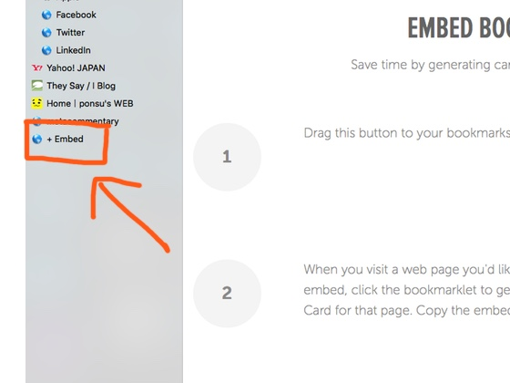

記事内に表示するリンクカードの作り方 Embedlyというサービスを使って、一瞬でリンクカードを作る方法。
前回の記事では、自分の記事への内部リンク・外部リンクの貼り方について解説しました。 それらを踏まえ今回は、リンクカードの貼り方について説明します。「内部リンク」と「外部リンク」と「リンクカード」 の３つの使い分けによって、より本格的でユーザーフレンドリーなサイトの作成を目指しましょう！
↓↓↓↓↓今回作るリンクカード
記事にリンクを貼る時、横につけるマークを使いこなそう！さて、リンクカードを作る方法はいくつかあります。イチから自分でコードを書いて自作する人もいれば、「GetTabInfo」というGoogleの拡張機能を使う人もいるそうです。 Wordpressでブログを書いている人ならプラグインなどを使用するのでしょう。
私のブログはWordpressではなく、自分でコードを書いて作るタイプのWEBサイトですのでプラグインは使えません。 イチから自分でコードを書いて自作する気力もないです。 正直、「GetTabInfo」は今の段階ではよくわかってないです。少し調べた感じ、なんか違う感は感じました。
今回Embedlyを選んだのは、簡単・無料だから！これが理由です。 有料版（月１０００円くらい）を買わないことには右下に出てくる「powered by embedly」という文字が邪魔だったり、カスタマイズ性の面で少し問題はありますが...。 それでも、今の私のブログにはこれで十分と考えたので、このサービスの採用を決定しました。
ではとりあえずリンクカードを作ってみましょう！ まずは https://embed.ly/bookmarklet に入ります。
「＋Embed」というボタンをブックマークにドラック＆ドロップします。 すると...なぜかドロップできませんでした...（えっ！） このブラウザはChromeなのですが...。あれ？おかしいなー？
仕方ないのでSafariでやってみることにしました。 私は普段からブラウザはChrome一択なので残念ですが... まぁSafariを開くくらいそんなに大変なことでもないし、 これを使う時はSafariで対応...ということで妥協することにします。
そしてSafariでは無事に成功！うーん、なんでChromeはダメだったかなー。 いつか理由がわかったら報告します！（適当）
まずはカードを作りたいリンク先のページを開きます。 そして、その後、先ほどのブックマークをクリックします。
するとこのような画面ででてきます。 うん、画像がでか過ぎる！大きい画像のままでも、もちろんいいです。 好みの問題だと思います。けど、私はもう少し控えめなサイズが好きなので、 左下のここをクリックして画像を縮めることにしました。
これで丁度いいですね！ このレイアウトで気に入ったら、この下にでてきたリンクをコピーして、HTMLの リンクカードを挿入したい場所に貼り付けます。
これで完成です！
でも、デフォルトバージョンのリンクカードにはちょっと気に入らない所があります。 マウスをこのリンクカードの上に置いた時に、変なSNSアイコンでてくるし、 白色が背景と同化してしまうから枠をつけたい... ということで、Googleのデベローパーツールでコード解析をし、 少しカスタマイズしました。
修正箇所はCSSです。
//枠をつける
.embedly-card{
border: 1px solid #555;
border-radius: 8px;
}
//SNS アイコンを消す
.embdscl0{
display: none;
}
これで枠がついて、SNSアイコンが消えて私好みのリンクカードになりました。 とまぁ今回はEmbedlyでリンクカードを作る方法をまとめましたが、現在、 もっといいサービスはないか模索中です。 誰かもっといいのがあるよーという人がいればぜひ教えて下さい。 よろしくお願いします。
記事にリンクを貼る時、横につけるマークを使いこなそう！